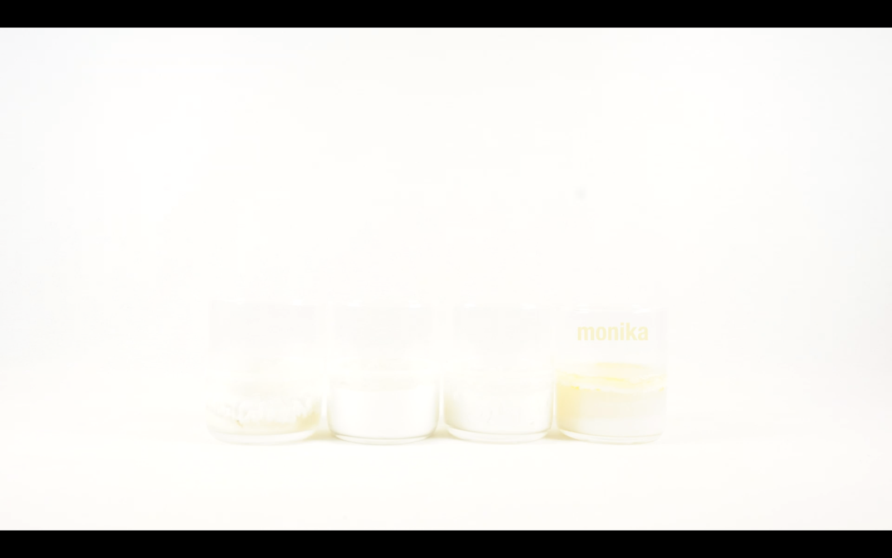

Via Lactea - uma especulação cosmopoética

pt: https://vimeo.com/370704714
en: https://vimeo.com/397169421
fr: https://vimeo.com/370703715
"Via Lactea – uma especulação cosmopoética" [2019] é uma investigação indisciplinar em torno da noção de leite como língua e com trabalhos que atravessam a ecologia/economia dos corpos de leite que nutrem a vida contemporânea partindo de uma observação doméstica: quanto mais minha filha fala, menos ela mama; o leite é sua relação mililítrica com o mundo; o leite materno é uma língua, é a língua-mãe. Trata-se de uma pesquisa experimental [constelações teóricas, imagéticas, escultóricas e sonoras] em torno da amamentação e do leite: não apenas sobre a relação mãe-filhx mas, no Antropoceno – em meio ao colapso moderno e climático –, uma questão cosmopolítica do feminismo multiespecífico que pensa as línguas não-negociadas com outras mamíferas e os sistemas de subalternização humana e não-humana envolvidos na amamentação prolongada e interespecífica. Nesse contexto como não fazer um paralelo entre a economia do leite na terra e a formação leitosa do céu ocidental?
Esse vídeo é composto a partir de um timelapse feito da observação de 4 leites de fêmeas distintas: cabra, vaca, ovelha e monika (1 foto a cada 7 minutos durante 3 semanas). Para a composição sonora gravamos e manipulamos leites de diferentes densidades [karoline, vaca, cabra e ovelha] com hidrofones.
"Via Lactea – a cosmopoetic speculation" [2019] is an undisciplined investigation around the notion of milk as a language protocol and with works that go through the ecology/economy of the bodies of milk that nourish contemporary life starting from a domestic observation: the more my daughter speaks, the less she sucks; milk is her millilitre relationship with the world; mother's milk is a language, it is the mother tongue. This is an experimental research [theoretical, imagetic, sculptural and sound constellations] around breastfeeding and milk: not only about the mother-child relationship but, in Anthropocene - in the midst of modern and climatic collapse - a cosmopolitical question of multispecies feminism that thinks of non-negotiated languages with other mammals and the systems of human and non-human subordination involved in prolonged and interspecific breastfeeding. In this context, how can we not draw a parallel between the economy of milk on earth and the milky formation of the western sky?
This video is a timelapse made from the observation of 4 distinct female milks: doe, cow, ewe and monika (1 photo every 7 minutes during 3 weeks). For the sound design we recorded and manipulated milks of different densities [karoline, cow, ewe and doe] with hydrophones.